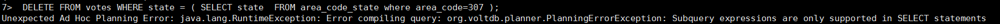
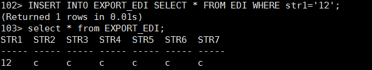
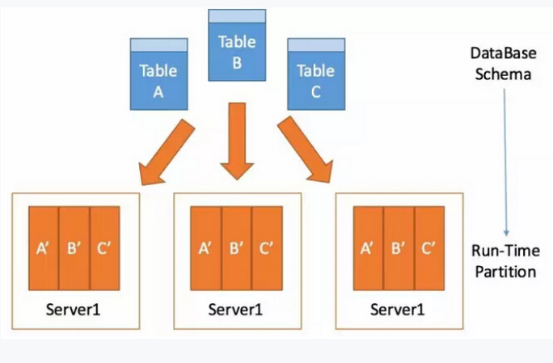
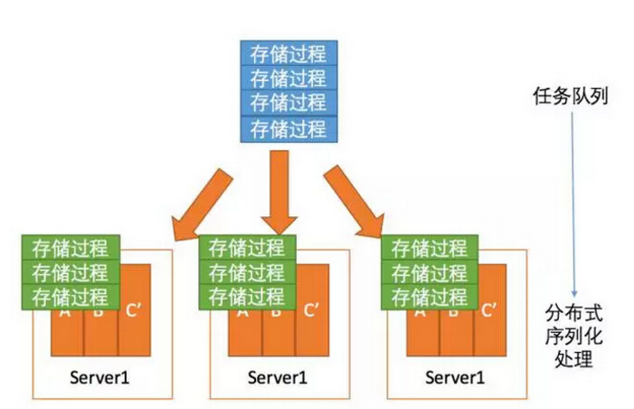

VoltDB 简介
Posted on 2016-10-11(星期二) 12:00 in VoltDB
一、VoltDB 简介
VoltDB 是一种内存数据库，作为常见的内存数据库( K-V 存储)，但也可以只将这种k-v形式存储的内存数据库称为内存缓存（cache），其不是通常sql操作数据库因此也称类似的数据存储为 NoSQL，但作为新型的内存数据库NewSQL，不同于 NoSQL 数据库，它还是立足于常用的关系型数据库数据存储方式，并且支持 sql，支持事务。
作为新兴的一种内存数据库技术，VoltDB 可以说是完美，尤其是对于数据量大，单笔数据小的使用场景，voltDB 占尽了优势，采用内存存储，是为了提高传统关系型数据库速度的瓶颈，shard-nothing 结构让它可以做到集群部署的高可用，弹性存储。最关键的是其很好的继承了传统数据库的sql以及事务特性，这对于其使用者可以很好的从传统关系型数据库切换到voltDB来。下面将具体介绍 VoltDB 的特性以及使用。
1.1 事务
VoltDB 的事务沿用了传统关系型数据库的特性，并且在传统型数据库事务之上做出了很多优化以及改进。
VoltDB 是如何确保其事务特性？（ACID）
- 原子性：对于一次事务的执行，在
VoltDB中 提供了存储过程来封装，以此来保证原子性。 - 一致性：
VoltDB消除了数据库的锁，插销和资源管理的开销，使用并行的单线程方式确 - 隔离性：
VoltDB实现了事务的最高隔离级别，可串行化读。 - 持久性：
VoltDB目前存在的两个版本，社区版与企业版，对于企业版支持周期性的数据库的snapshot，而社区版的持久化方案，会在后面的章节中详细介绍。
1.2 SQL结构语言
VoltDB 最大的优点之一，它很好的支持了 SQL，按 SQL99 标准来书写 SQL 。它包含了 DDL ，DML 以及 SQL 函数。DDL 支持创建 TABLE，VIEW，INDEX 等常用的 DDL，另外还有 PROCEDURE，STREAM 等VoltDB特有的 DDL,VoltDB支持的 DML 语言包含了以下介绍的几种，DELETE，INSERT，SELECT，UPDATE以及UPSERT。UPSERT可以理解为一种复合操作。需要特殊说明的是，在VoltDB中DELETE，UPDATE是不允许出现子查询的，只有SELECT与INSERT操作可以支持子查询，其中INSERT也只支持简单的子查询。


下面来强调说明 VIEW 以及 STREAM ，VIEW 在传统关系型数据库当中是为了减少 sql 重复使用等用途，同样在 VoltDB 中使用视图（物化视图）可以在某一程度上很大的提升查询速度，但是在创建 VIEW 时必须含有聚集函数。STREAM 在企业版的使用中（ STREAM 暂不支持社区版）是用来从 VoltDB 中 Export 数据到其他目的地，比如 file，kafka，elasticsearch，rabbitMQ，jdbc 等。
1.3 分区
VoltDB 分区特性可以说是其提高检索速度的一大关键因素，尤其在做几张大表的联表查询的时候，效率尤为显著。VoltDB 的分区计划是将行平均分发到各个节点分区。用户通过指定被分区的表的列(分区键)，作为内部Hash函数的输入参数，进行 Hash 策略分区。在整个集群中，所有的节点对等，数据平均分发。

上述图中三张表，每张表都做了 Partition 然后平均分发到集群下的三个节点上。当然也可以做到单个节点分成多个区来存储。
VoltDB 另外还提供了一种 Replication 存储，这种方式可以说是小表的一种特有，在默认情况下，VoltDB 对所创建的表都是做了 Repliaction 操作，即为每个节点复制一张同样的表结构以及表数据。
另外，分区特性的最佳实现必须基于分区键的选取以及设计。其他因素涉及到集群的参数以及硬件设备。
1.4 存储过程
VoltDB 所有的事务都是由 java 实现的预编译存储过程实现的，且所有的存储过程在任意站点上都是序列化执行的，这样使 VoltDB 达到了最高的隔离级别，且消除了锁的使用，很好地提高了处理速度。VoltDB 提供了两种接口,http JSON 以及 JDBC，使用任意接口都可以实现客户端调用已经部署好的存储过程。

1.5 处理速度以及高可用集群
VoltDB 与传统关系型数据库最大的一点差距在于它的速度，尤其在事务处理量(秒级)以及联表查询。另外其企业版的支持的高可用也是相当棒，在出现范围内的节点宕机，集群可以保证正常工作并且保证数据不丢失。而设置与这些特性有关的参数 siteperhost 与 ksafty 也同样非常关键，详细的将会在下面章节中具体介绍。
二、参考文档
- https://docs.voltdb.com/UsingVoltDB